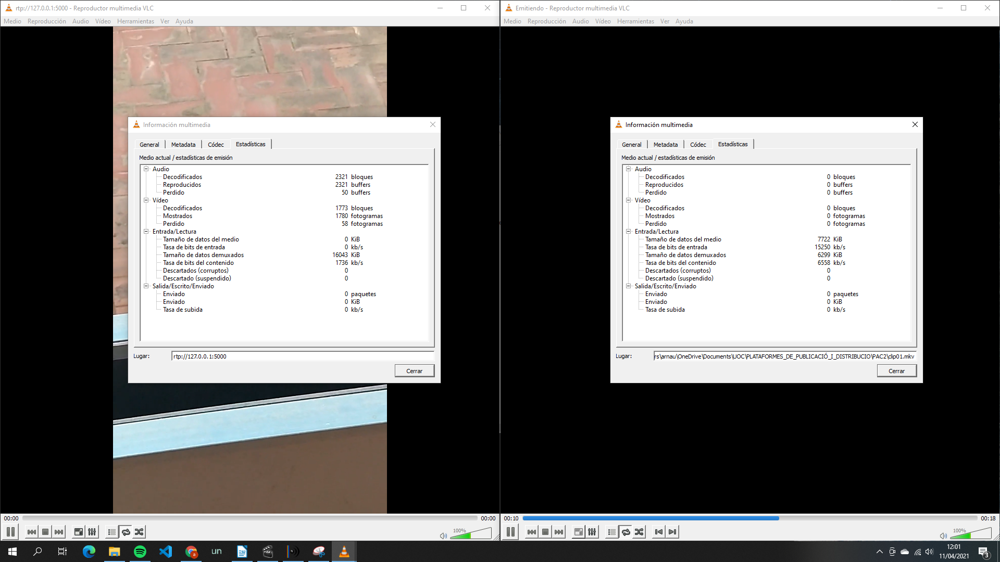
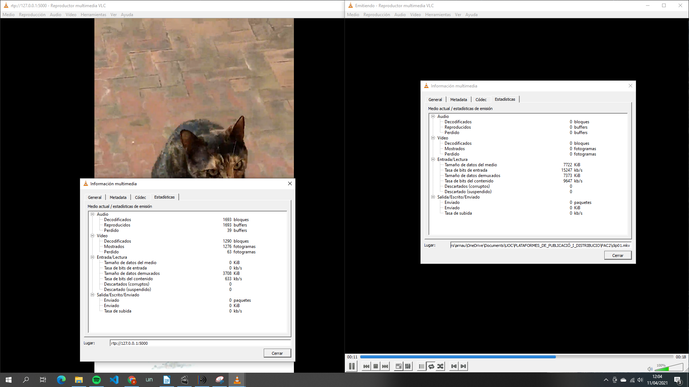
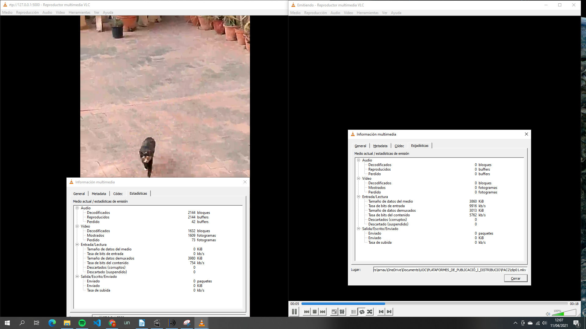
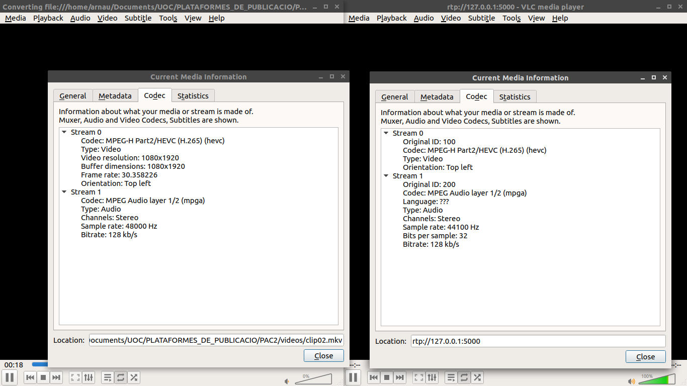
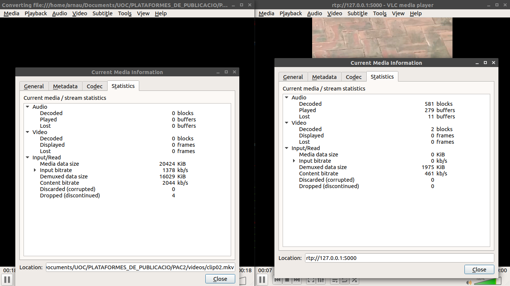
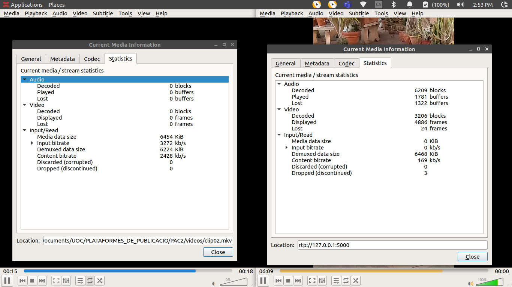
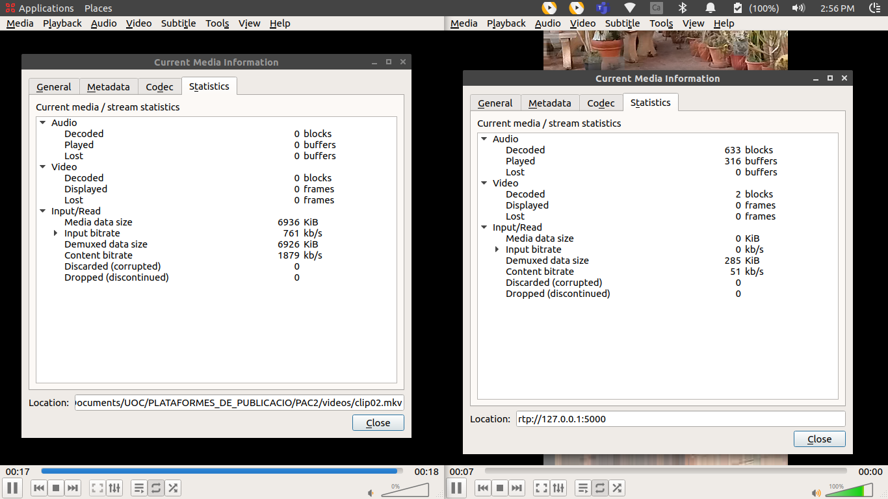

Com que està destinat a ser visualitzat per web, he configurat un bitrate de 2Mbs, perquè sigui adequat el seu ús des de navegadors.
Per altra banda he deixat una mida del vídeo adaptada a la mida que s’ha de veure des de la pàgina web. En aquest cas és un vídeo vertical. S’ha configurat la següent mida:
El format webm és adequat per utilitzar-lo en pàgines web, tot i això no tots els navegadors el suporten. Per tant es codificarà en dos còdecs diferents per a optimitzar el seu ús en diferents navegadors:
Fitxer webm (video: VP9, audio: Vorbis)
Fitxer mp4 (video: AVC, audio: ACC)
Utilitza el sistema de baixada progressiva. Això permet anar veient el contingut del vídeo un cop s'han baixat una part suficient de dades. El protocol opera sobre HTTP fent servir TCP. Aquest tipus de model suposa una millora respecte al model de vídeo incrustat, on s'havia de baixar el contingut complert del vídeo per a poder-lo visualitzar.
Per altra banda, respecte al model de streaming, en la baixada progressiva, s'ha de guardar el fitxer en memòria per a poder ser visualitzat. En la transmissió a temps real no és necessari. També la transmissió en streaming adapta la quantitat de dades transmeses a l'amplada de banda del client demanant el vídeo. En la baixada progressiva, això no és possible: tots els clients utilitzen l'amplada de banda que disposi el servidor.
He utilitzat el host que proporciona github de manera gratuïta:
Proves realitzades:
En aquest segon exercici, s’ha utilitzat el mateix fitxer de vídeo base que en el primer exercici. S’ha generat el fitxer amb les característiques especificades. Amb MediaInfo es poden veure les següents característiques:
Emissor:
Els còdecs utilitzats són:
La taxa de bits és molt variable. Està entre valors de 2mb/s i 10 mb/s. Es podria dir que la mitjana està al voltant dels 5mb/s.
Receptor:
Els còdecs utilitzats són:
La taxa de bits és molt variable similar al cas de l’emissor. Està entre valors de 1mb/s i 10 mb/s. Es podria dir que la mitjana està al voltant dels 5mb/s.
En general el vídeo per si mateix no es reprodueix de forma fluida. Es veu com entretallat. Sobretot quan la imatge té molta variació / moviment. Entenc que l'equip no té prou capacitat de càlcul.
En aturar el vídeo, triga uns 2 segons a reaccionar. Això és perquè aquesta porció de dades (entre que s'acciona la pausa a l'emissor i s'atura el receptor) ja ha estat enviada i per tant es visualitza en el receptor. Quan es torna a posar en marxa, la imatge triga uns 5 segons a tornar-se a estabilitzar i es veu distorsionada, molt granulada:
El VLC d’emissió està enviant el fitxer amb la mateixa codificació que el fitxer emmagatzemat, per tant no està realitzant una compressió de les dades.
Tant el vídeo com l'àudio es tallen. Pràcticament no es veu moviment, només imatges estàtiques. És degut al fet que l'equip no és capaç de realitzar els càlculs de codificació i descodificació amb prou rapidesa, de manera que es pugui veure el vídeo.
La imatge es veu més granulada. Com més es baixa la velocitat, més es veuen els píxels a la imatge i es redueix el detall.
Velocitat vídeo: 2000kbps
Velocitat vídeo: 500kbps
Velocitat vídeo: 200kbps
Quan es retrocedeix o avança en l'emissor, primer la imatge al receptor continua emetent-se durant uns dos segons. Després s'atura i triga uns dos segons a tornar a arrancar. Quan ho fa, la imatge està distorsionada, de manera que es barregen la imatge on s'havia quedat aturada amb les noves imatges que es reben.
No reacciona de manera immediata perquè l'emissor abans d'aturar-se ja havia enviat una part de dades posteriors al punt d'aturada, de manera que aquestes són rebudes al receptor.
Això és a causa que els fotogrames tipus B i P, es basen en els canvis respecte a fotogrames anteriors. És necessari un fotograma tipus I com a base per definir els canvis. Com que quan s'avança o retrocedeix el vídeo, no sempre quadra amb un fotograma tipus I, els fotogrames tipus B i P no poden definir correctament la imatge per si sols, de manera que es barregen la imatge anterior al canvi amb les modificacions dels quadres tipus B i P.
Aquesta distorsió es pot veure en la següent imatge:
No he aconseguit emetre el vídeo en format HEVC des de l'equip que he dut a terme les tasques anteriors. El VLC emissor comença l'emissió, però al receptor no arriba el vídeo i al cap d'uns segons es tanca el programa automàticament.
He decidit realitzar l'exercici en un altre equip amb el sistema operatiu Ubuntu. Aquest equip té menys potència i no s'acaba de visualitzar el vídeo correctament en cap de les velocitats 2000 kbps, 500 kbps i 200 kbps. El vídeo es veu tallat i només es veuen algunes imatges al llarg del temps que dura.
Sí que es veu certa menys qualitat en les imatges, en reduir la quantitat de dades transmeses. No es pot valorar com reacciona en avançar o endarrerir el vídeo.
Codificacions de l’emissor i el receptor: Velocitat vídeo: 2000kbps
Velocitat vídeo: 500kbps
Velocitat vídeo: 200kbps
